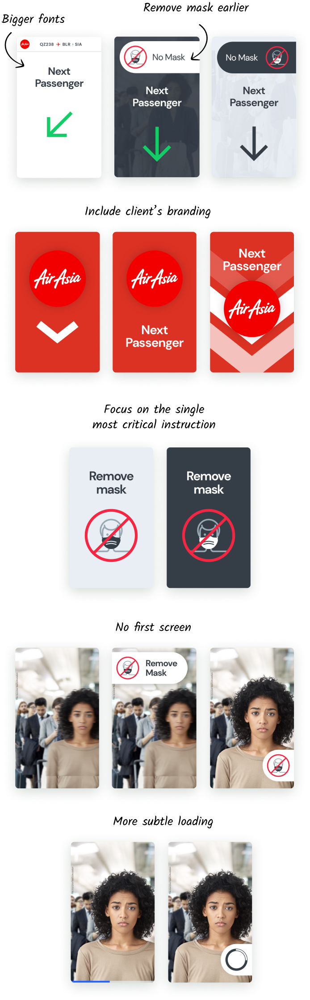
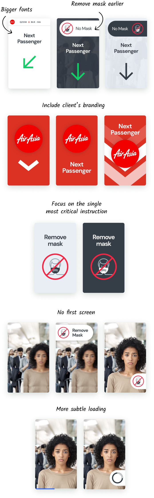

I've prototyped, tested, and delivered a solution that increased all the users' perception scores and brought to the company a new, fast, and cheap prototyping method.

Vision-box was born 20 years ago as a CCTV company, and today is one of the main players of facial recognition systems, reaching €90M in revenue over the past year.
The experience during a face recognition, however, is extremely slow when compared to any cheap cellphone that a regular person may carry in the pocket.
Vpod is a new product for boarding travelers into aircraft and cruise ships. Registered users may proceed by just showing their faces. It is safer than a boarding pass scanner and enables semi-autonomous queue processing while providing an innovative branding experience.


The first round of tests and interviews demonstrated that the passengers automatically step forward after the previous passenger leaves, therefore don’t need a instruction for that. In the other hand, they were not following the instructions to remove mask and glasses.
The airline agents would not be satisfied at all, since the boarding time was far away from the target. We also found that the positioning of the entire setup and the passengers is critical and the agents needed clear instructions about that.
I started with this product after the first MVP, to make an assessment of the user experience and propose improvements for the product backlog.
We knew that the technology needed improvement, but there was any target yet. My first step was to analyze all the inputs from the test and surveys, and make more research to define a list of experience requirements, with clear acceptance criterias.
With clear goals in mind I started to sketch some ideas.
 

I could not rely on static mockups to communicate the design intent, and the common prototype tools were helpless because I needed one where I could interact via camera.
I had the idea to look for an augmented reality tool and found the Spark AR which was perfect for the purpose because of its facial recognition feature.

I performed an A/B test using my phone to validate the proposals. Although I could not compare the timings against the previous test, I could ensure that the passengers were removing the mask before approaching the camera and that would definitely increase the speed.

The solution was delivered to the product development team with interactive and inspectable prototypes, accompanied by the experience requirements.
We reached, during the tests, 100% of passengers approaching the device not wearing mask which will make the process faster and all scores of users’ perception were improved.
Vision-box now has a fast and cheap path to test improvements in the UI of its most innate and important feature: the face recognition.